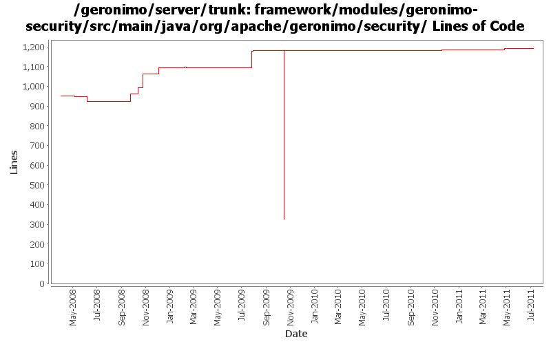

[root]/framework/modules/geronimo-security/src/main/java/org/apache/geronimo/security
 ca
(3 files, 1068 lines)
ca
(3 files, 1068 lines)
 credentialstore
(7 files, 512 lines)
credentialstore
(7 files, 512 lines)
 deploy
(1 files, 100 lines)
deploy
(1 files, 100 lines)
 jaas
(12 files, 1168 lines)
jaas
(12 files, 1168 lines)
 jacc
(7 files, 519 lines)
jacc
(7 files, 519 lines)
 mappingprovider
(7 files, 663 lines)
mappingprovider
(7 files, 663 lines)
 jaspi
(8 files, 595 lines)
jaspi
(8 files, 595 lines)
 keystore
(2 files, 1320 lines)
keystore
(2 files, 1320 lines)
 realm
(1 files, 157 lines)
realm
(1 files, 157 lines)
 providers
(26 files, 4525 lines)
providers
(26 files, 4525 lines)
 util
(1 files, 253 lines)
util
(1 files, 253 lines)

| Author | Changes | Lines of Code | Lines per Change |
|---|---|---|---|
| Totals | 44 (100.0%) | 1230 (100.0%) | 27.9 |
| djencks | 23 (52.3%) | 1183 (96.2%) | 51.4 |
| gawor | 2 (4.5%) | 26 (2.1%) | 13.0 |
| genspring | 2 (4.5%) | 15 (1.2%) | 7.5 |
| xuhaihong | 8 (18.2%) | 2 (0.2%) | 0.2 |
| rickmcguire | 1 (2.3%) | 2 (0.2%) | 2.0 |
| jlaskowski | 1 (2.3%) | 1 (0.1%) | 1.0 |
| jdillon | 3 (6.8%) | 1 (0.1%) | 0.3 |
| dwoods | 4 (9.1%) | 0 (0.0%) | 0.0 |
GERONIMO-6058 Replace StringBuffer usage with StringBuilder
1 lines of code changed in 7 files:
GERONIMO-5937 Currently, connector will call ContextManager.unresigterSubject in the after callback method even when the current subject is the default ContextManager.EMPTY subject.
1, don't unregister default EMPTY subject.
2, add a empty non-null principal to the EMPTY subject.
11 lines of code changed in 1 file:
We don't want to add principal to a readonly subject.
4 lines of code changed in 1 file:
GERONIMO-5057 Use those xmlbeans generated by JAVA EE 6 schema files
1 lines of code changed in 1 file:
GERONIMO-4987 Use ConcurrentHashMap instead of Collections.synchronizedMap(new HashMap())
Patch provided by Jack Cai.
2 lines of code changed in 1 file:
GERONIMO-4916 step 2 move sandbox osgi framework into trunk
854 lines of code changed in 6 files:
GERONIMO-4916 step 1 remove old framwork
0 lines of code changed in 6 files:
GERONIMO-4155, GERONIMO-4778 Prevent use of a run-as role that isn't configured to supply a non-null Subject. Make servlet dispatch follow run-as roles
6 lines of code changed in 1 file:
GERONIMO-2622, GERONIMO-4766 Implement jacc handler data so the types dont interfere with each other. ejb and soap handlers not hooked up yet
114 lines of code changed in 3 files:
revert 741735. must set Policy first before calling PolicyConfigurationFactory.getPolicyConfigurationFactory() (GERONIMO-4037)
11 lines of code changed in 1 file:
initialize PolicyConfigurationFactory before setting Polity. Lets server start with security manager on Windows. Patch from Ivan (GERONIMO-4037)
15 lines of code changed in 1 file:
GERONIMO-4445, GERONIMO-4415 Fix up GeronimoLoginConfiguration and SimpleCredentialStore, use in monitoring console agent
37 lines of code changed in 1 file:
header fixes (Rev, Date)
1 lines of code changed in 1 file:
GERONIMO-4360 security modifications for connector 1.6
98 lines of code changed in 2 files:
GERONIMO-3417 new method to help with jaspi implementation
33 lines of code changed in 1 file:
GERONIMO-4258 move geronimo-j2ee into plugins/j2ee
41 lines of code changed in 2 files:
GERONIMO-4101 move method from ContextManager to GeronmoSecurityService and inline it
0 lines of code changed in 1 file:
More loggers back to statics
1 lines of code changed in 1 file:
(GERONIMO-3985) Use SLF4J as the primary logging facade for Geronimo
0 lines of code changed in 2 files:
GERONIMO-3913 - NPE in org.apache.geronimo.security.SubjectId.hashCode() caused by incorrect JAVA_HOME or JRE_HOME. Patch from Toby Cabot.
0 lines of code changed in 4 files: